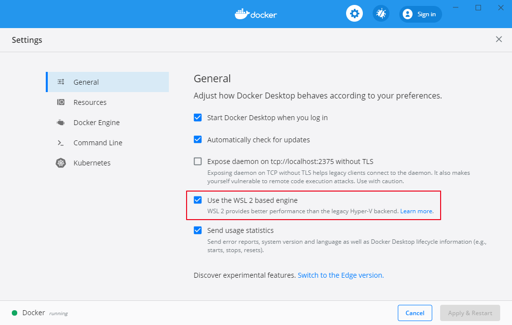

在 Windows 中使用 Elasticsearch 的 Docker Image 时出现了以下的错误：
max virtual memory areas vm.max_map_count [65530] is too low, increase to at least [262144]
Google 后的方案是要在 Docker Host 中运行如下的命令：
sysctl -w vm.max_map_count=262144
如果是在 Linux 中也就简单了，直接运行就行了。但是在 Windows 中，就需要在 Windows Docker Host 上运行以上命令。这就要借助与 WSL 命令
wsl -d docker-desktopsysctl -w vm.max_map_count=262144这是基于 WSL2 的机制，前提是Use the WSL2 based engine 已经被打开。否则的话，应该使用别的办法
